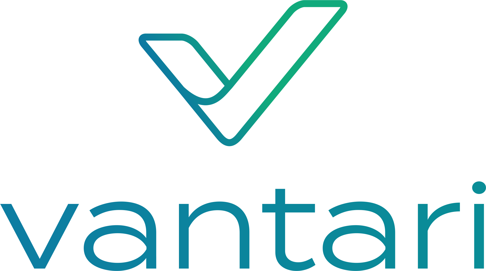

proposta de redesign · maio 2026Vantari Next · Análise & Direção Visual
De interface funcional
a ambiente vivo.
O Next entrega os dados. Falta entregar a sensação de que algo está acontecendo — calor, ritmo e personalidade. Esta proposta reorganiza o sistema visual ao redor da marca atual (V em gradiente teal → verde), expande a paleta de dados, introduz interação real nos gráficos e dá a cada seção um caráter próprio.
4
direções de melhoria
12
tokens novos
7
componentes redesenhados
∞
microinterações